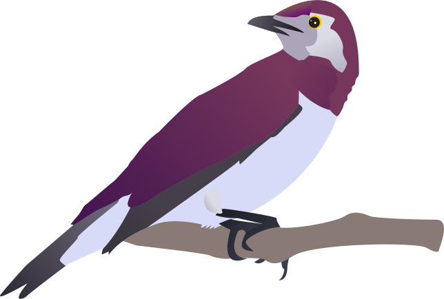

به نام دوست
فونت ساحل
در وزنهای معمولی، ضخیم و تیتر تقدیم می گردد.
این یک نسخه اولیه از قلم ساحل می باشد. تقاضا میگردد هر گونه ایراد یا کاستی در قلم می بینید و یا پیشنهادی برای بهتر شدن آن دارید لطفا در قسمت ایشوهای گیتهاب و یا از طریق آدرس saber.rastikerdar بر روی Gmail.com در میان بگذارید. برای قلم ترکیبی با لاتین Open Sans یا Roboto پیشنهاد میگردد.
مجوز OFL به طور خلاصه میگوید شما اجازه استفاده از قلم در هر کاری چه شخصی و چه تجاری خواهید داشت منوط به اینکه چه خود فونت به تنهایی و چه نسخه های ویرایش شده آن را نباید بفروشید.
اگرچه این قلم آزاد و تحت مجوز OFL منتشر گردیده و الزامی برای پرداخت هزینه ندارید اما از آنجایی که برای طراحی و تولید فونت زحمت بسیاری کشیده شده خواهشمند است در صورت امکان و علاقه مبلغی را برای حمایت از این اثر هدیه فرمایید. با سپاس
دریافت (دانلود)
GitHub
پرداخت وجه در صورت تمایل هنگام پرداخت، لطفا نام، ایمیل، آدرس وب و متن مورد نظرتان را نیز درج بفرمایید. بدیهیست ایمیل منتشر نخواهد شد.
لطفا این فونت را در سایت دیگری برای دانلود قرار ندهید و در عوض به این اینجا لینک دهید تا این صفحه دیده شود.
پرداخت وجه در صورت تمایل هنگام پرداخت، لطفا نام، ایمیل، آدرس وب و متن مورد نظرتان را نیز درج بفرمایید. بدیهیست ایمیل منتشر نخواهد شد.
حامیان
-

پرنده مهاجر
یادمه اولین باری که با گروه پرواز میکردم داشتم از هیجان منفجر میشدم. آخه از همه کوچکتر بودم. توی سفر کلی سوتی می دادم و بقیه رو حسابی می خندوندم. چون تازه کار بودم حواسم زیاد پرت می شد و گروه رو به زحمت می انداختم. ولی خب دوستام همیشه مراقب بودند و سر به سرم میذاشتن. اسم من پرنده مهاجر هست.X۰ تومان